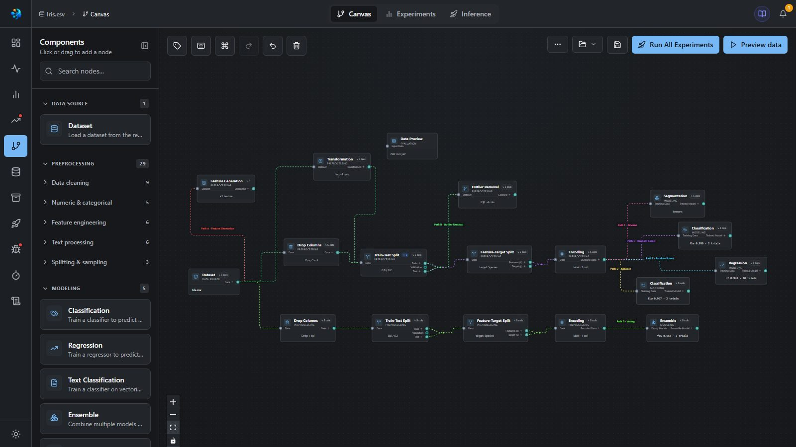
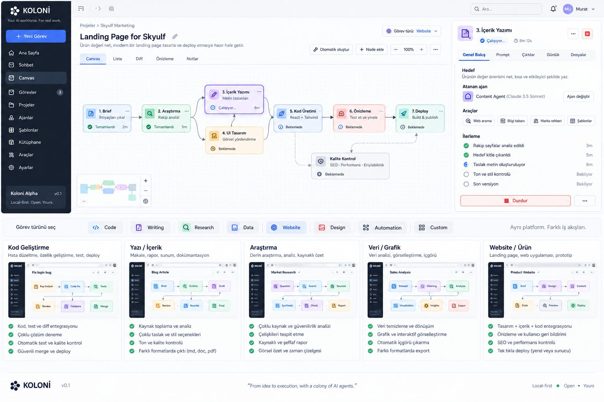

The family
TWO PRODUCTS · ONE PRINCIPLEKayra
Machine learning pipelines you can verify. On a canvas or in Python, locally or on Databricks.
- ✓ Leakage checks before you train
- ✓ Training, tuning and run comparison
- ✓ Registry, deployment, drift monitoring
- ✓ Export a model as a standalone API
- $ pip install skyulf-core

Koloni
A colony of AI agents that work together and keep what they learn.
- ✓ Chat, single agent, team or colony
- ✓ Diffs, previews and test evidence you approve
- ✓ Local models through llama.cpp

01
Local first.
Runs on your laptop or your own server. Your data never has to leave it.
02
Grows with you.
Start on a laptop. Move to your own server or cloud when you need to, without starting over.
03
Open by default.
Read every line, fork it, ship it. Apache-2.0 libraries, AGPLv3 platforms.
04
Evidence over claims.
Every result comes with the record that produced it: artifacts, diffs, tests.
Sky + Ulf
Sky is the open space above Earth, where the sun, moon, stars, and clouds live. Ulf means “wolf,” with Nordic roots, and the wolf is also a strong symbol in Turkic tradition. Together it fits the project: independent and community-driven.